Sep 10, 2024
Daily Lexicon
USCCB Verse
Tuesday, 23rd week in Ordinary Time
1 Corinthians 6 11
That is what some of you used to be-
but now you have had yourselves washed, you were sanctified,
you were justified in the name of the Lord Jesus Christ
and in the Spirit of our God
Mountain Stream
Thurmont Md
Photo # 1640
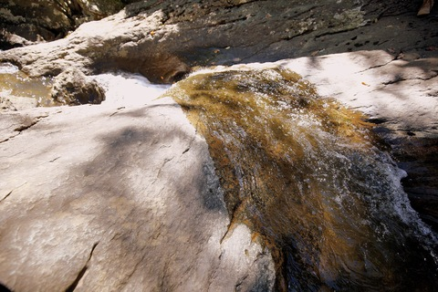
Sep 09, 2024
Daily Lexicon
USCCB Verse
Monday, 23rd week in Ordinary Time
Saint Peter Claver, priest
Psalms 5 5,6
For you, O God, delight not in wickedness;
no evil man remains with you;
the arrogant may not stand in your sight.
You hate all evildoers.
Storm Scarp
Photo # 1639
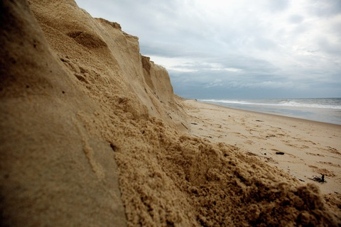
Sep 08, 2024
Daily Lexicon
USCCB Verse
23rd Sunday in Ordinary Time
Isaiah 35 4
Say to the fearful of heart-
Be strong, do not fear!
Here is your God,
he comes with vindication;
With divine recompense
he comes to save you.
Zinnia
Photo # 1638
Sep 07, 2024
Daily Lexicon
USCCB Verse
Saturday, 22nd week in Ordinary Time
The Memorial of the Blessed Virgin Mary on Saturday
1 Corinthians 4 12,13
When ridiculed, we bless;
when persecuted, we endure; when slandered, we respond gently.
Dune Grasses
Jockeys Ridge, OBX
Photo # 1637
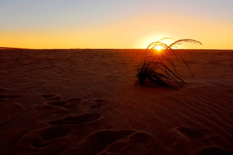
Sep 06, 2024
Daily Lexicon
Friday, 22nd week in Ordinary Time
Corinthians 4 5
Therefore, do not make any judgment
before the appointed time, until the Lord comes,
for he will bring to light what is hidden in darkness and
will manifest the motives of our hearts,
and then everyone will receive praise from God.
God Rays
Photo # 1636
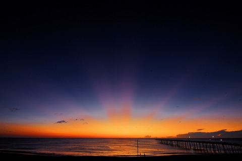
Sep 05, 2024
Daily Lexicon
USCCB Verse
Thursday, 22nd week in Ordinary Time
Psalms 24 1bc,2
The LORD's are the earth and its fullness;
the world and those who dwell in it.
For he founded it upon the seas and established it upon the rivers.
Jetty
Rehoboth
Photo # 1635
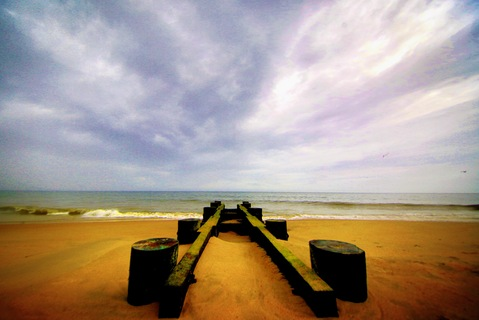
Sep 04, 2024
Daily Lexicon
USCCB Verse
Wednesday, 22nd week in Ordinary Time
1 Corinthians 3 8,9
He who plants and he who waters are one,
and each will receive wages in proportion
to his labor.
For we are God's co-workers;
you are God's field, God's building.
Leishar Farn
Photo # 1634
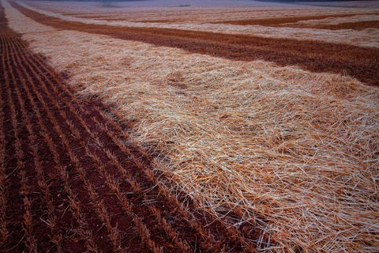
Sep 03, 2024
Daily Lexicon
USCCB Verse
Tuesday, 22nd week in Ordinary Time
Saint Gregory the Great, pope and doctor
1 Corinthians 2 12
We have not received the spirit of the world but the Spirit
that is from God,
so that we may understand the things freely given us by God.
Giant Zinnia
Photo # 1633
Sep 02, 2024
Daily Lexicon
USCCB Verse
Monday, 22nd week in Ordinary Time
1 Corinthians 2 3,4,5
I came to you in weakness and fear and much trembling,
and my message and my proclamation
were not with persuasive words of wisdom,
but with a demonstration of spirit and power,
so that your faith might rest not on human wisdom but on the power of God.
Sunrise
Nags Head, OBX
Photo # 1632
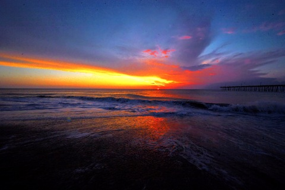
Sep 01, 2024
Daily Lexicon
USCCB Verse
22nd Sunday in Ordinary Time
James 1 21
Humbly welcome the word that has been planted in you
and is able to save your souls
Sunrise
from Leishar Farm
Photo # 1631
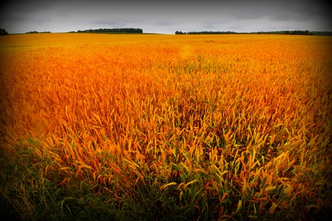
Aug 31, 2024
Daily Lexicon
USCCB Verse
Saturday, 21st week in Ordinary Time
The Memorial of the Blessed Virgin Mary on Saturday
Psalms 33 12,13
Blessed the nation whose God is the LORD, the people he has chosen for his own inheritance.
From heaven the LORD looks down;
he sees all mankind.
Pier off Roanake Island
Manteo, NC
Photo # 1630
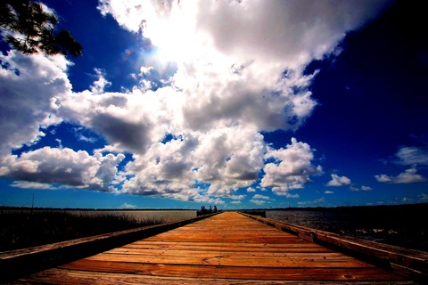
Aug 30, 2024
Daily Lexicon
USCCB Verse
Friday, 21st week in Ordinary Time
Psalms 33 4,5
For upright is the word of the LORD,
and all his works are trustworthy.
He loves justice and right;
of the kindness of the Lord the earth is full.
Monarch Butterfly
Photo # 1629
Aug 29, 2024
Daily Lexicon
USCCB Verse
Thursday, 21st week in Ordinary Time
The Beheading of Saint John the Baptist, martyr
Psalms 145 4,5
Generation after generation praises your works
and proclaims your might.
They speak of the splendor of your glorious majesty
and tell of your wondrous works.
Nags Head, OBX
Photograph of me photographing the sunrise
By Cathy Grillo
Photo # 1628
Aug 28, 2024
Daily Lexicon
USCCB Verse
Wednesday, 21st week in Ordinary Time
Saint Augustine of Hippo, bishop and doctor of the Church
Psalms 145 10,11
Let all your works give you thanks, O LORD, and let your faithful ones bless you.
Let them discourse of the glory of your Kingdom and speak of your might.
Cosmos
Photo # 1627
Aug 27, 2024
Daily Lexicon
USCCB Verse
Tuesday, 21st week in Ordinary Time
Saint Monica
Psalms 96 11,12
Let the heavens be glad and the earth rejoice; let the sea and what fills it resound;
let the plains be joyful and all that is in them! Then shall all the trees of the forest exult.
Rails to Trails
Mt Airy MD
Photo # 1626
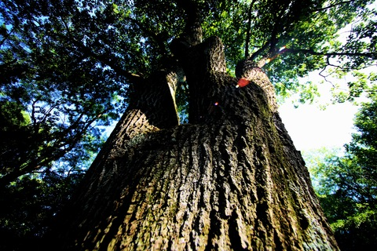
Aug 26, 2024
Daily Lexicon
USCCB Verse
Monday, 21st week in Ordinary Time
Psalms 96 2b,3
Announce his salvation, day after day.
Tell his glory among the nations; among all peoples, his wondrous deeds.
Sunrise
Rehoboth, DE
Photo # 1625
Aug 25, 2024
Daily Lexicon
USCCB Verse
21st Sunday in Ordinary Time
John 6 63,68
Your words, Lord, are Spirit and life;
you have the words of everlasting life.
Wetlands
Rehoboth, DE
Photo # 1624
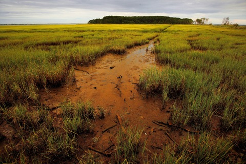
Aug 24, 2024
Daily Lexicon
USCCB Verse
Saturday, 20th week in Ordinary Time
The Memorial of the Blessed Virgin Mary on Saturday
Saint Bartholomew the Apostle
Psalms 85 11,12
Kindness and truth shall meet;
justice and peace shall kiss.
Truth shall spring out of the earth,
and justice shall look down from heaven.
Backlit clouds
at Sunset
Photo # 1623
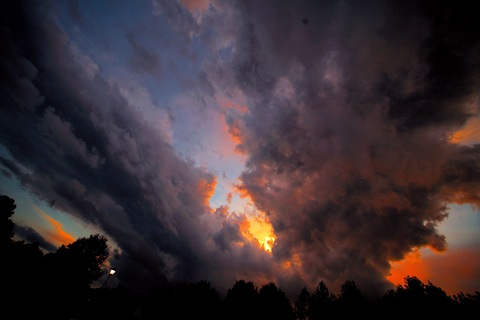
Aug 23, 2024
Daily Lexicon
USCCB Verse
Friday, 20th week in Ordinary Time
Saint Rose of Lima, virgin
Psalms 25 4b,5a
Teach me your paths, my God,
guide me in your truth.
Elevated boardwalk trail
Gordons Pond
Rehoboth, DE
Photo # 1622
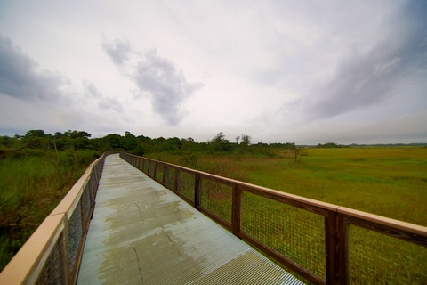
Aug 22, 2024
Daily Lexicon
USCCB Verse
Thursday, 20th week in Ordinary Time
Queenship of Blessed Virgin Mary
Ezekiel 36 26
I will give you a new heart,
and a new spirit I will put within you.
I will remove the heart of stone from your flesh
and give you a heart of flesh.
Storm Scarp at Sunrise
Rehoboth, DE
Photo # 1621

Aug 21, 2024
Daily Lexicon
USCCB Verse
Wednesday, 20th week in Ordinary Time
Saint Pius X, pope
Hebrews 4 12
The word of God is living and effective,a
able to discern the reflections and thoughts of the heart
Sunrise
Rehoboth, DE
Photo # 1620
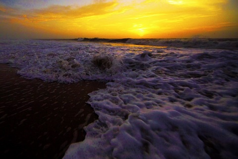
Aug 20, 2024
Daily Lexicon
USCCB Verse
Tuesday, 20th week in Ordinary Time
Saint Bernard of Clairvaux, abbot and doctor of the Church
Matthew 19 24
Again I say to you,
it is easier for a camel to pass through the eye of a needle
than for one who is rich to enter the Kingdom of God.
Circular Stair Case
Restored Watch Tower
Lewes, DE
Photo # 1619
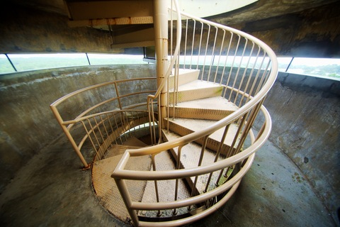